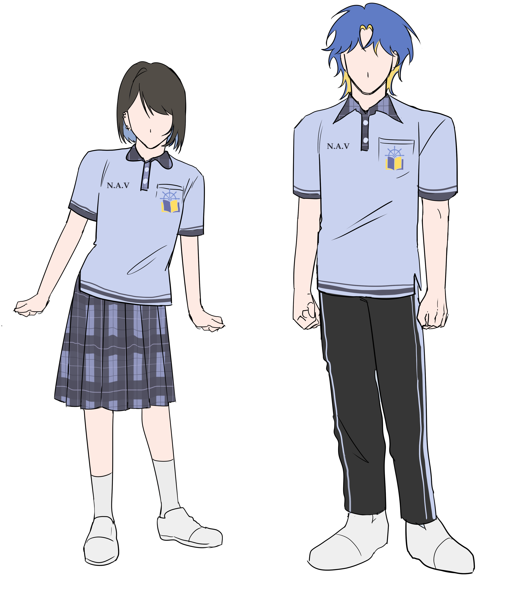
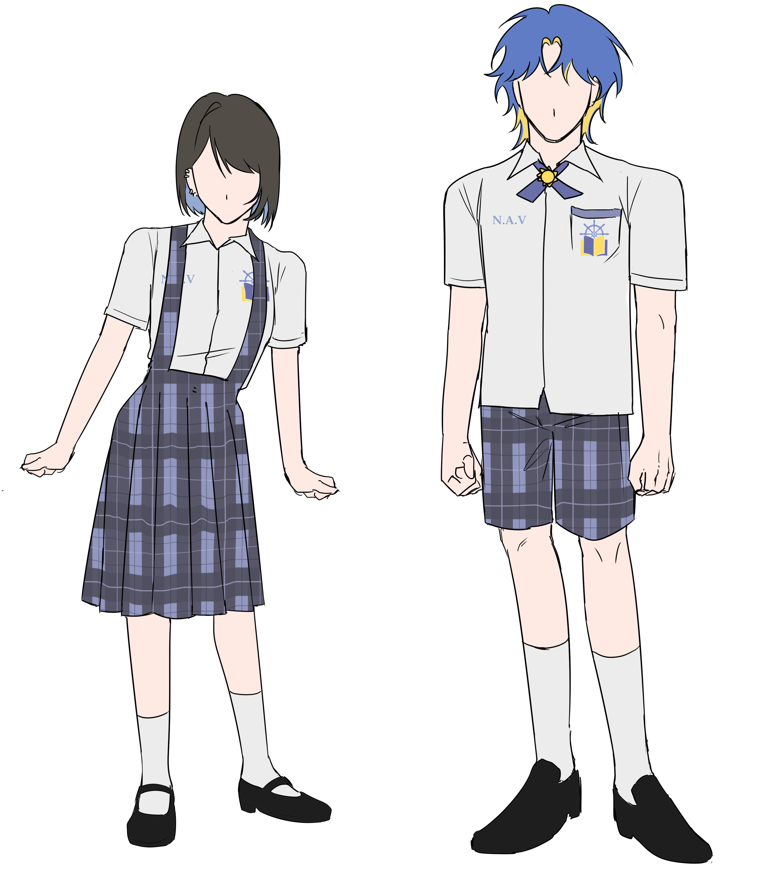
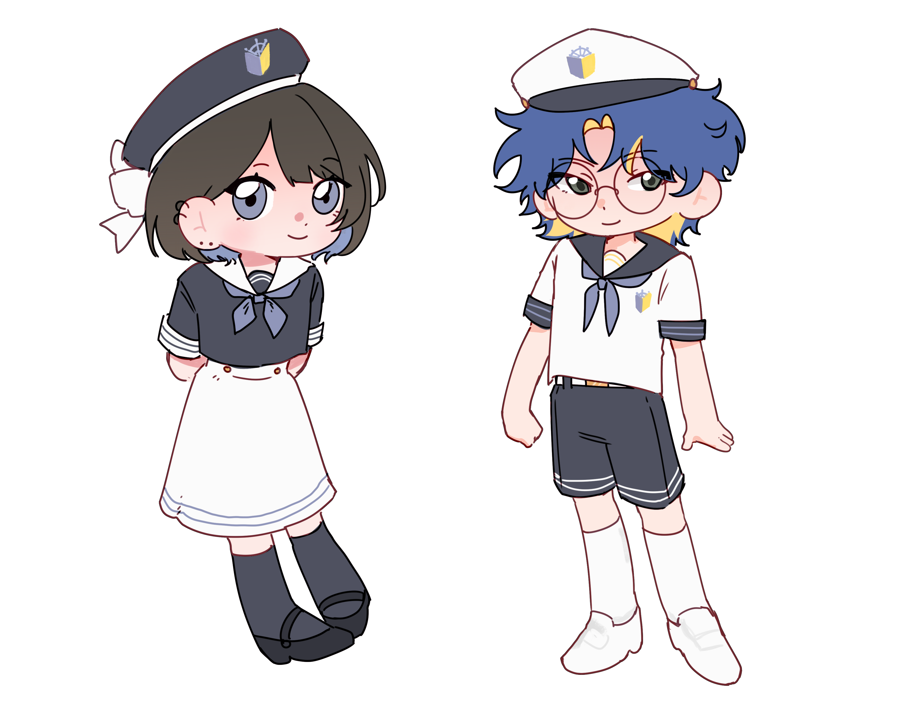

Uniform Guide
เครื่องแบบนักเรียน
ระเบียบการแต่งกายของนักเรียนนาวาทิวัตถ์ แบ่งตามระดับชั้นและประเภทชุด
ม.ต้น (G.7-9)
ม.ปลาย (G.10-12)
Activities
events

ชุดพละ (Physical Education Uniform)
สวมใส่ในวันที่มีคาบ CAS / กิจกรรมกีฬา และวันซ้อมกีฬา
หญิง
ชาย
ชุดพละนักเรียนหญิง
- เสื้อโปโลสีฟ้าอ่อน คอปกสีกรมท่า แขนสั้น ขอบแขนสีกรมท่า
- ปักชื่อย่อ "N.A.V" ที่อกด้านขวา
- ปักตราโรงเรียนที่อกด้านซ้าย
- กระโปรงพลีทลายสก็อตสีกรมท่า ยาวประมาณเข่า
- ถุงเท้ายาวถึงข้อเท้า สีขาวหรือสีกรมท่า
- รองเท้าผ้าใบสีขาวหรือสีกรมท่า
ชุดพละนักเรียนชาย
- เสื้อโปโลสีฟ้าอ่อน คอปกสีกรมท่า แขนสั้น ขอบแขนสีกรมท่า
- ปักชื่อย่อ "N.A.V" ที่อกด้านขวา
- ปักตราโรงเรียนที่อกด้านซ้าย
- กางเกงวอร์มขายาวสีกรมท่า มีแถบสีฟ้าอ่อนข้างขา
- ถุงเท้ายาวถึงข้อเท้า สีขาวหรือสีกรมท่า
- รองเท้าผ้าใบสีขาวหรือสีกรมท่า

ชุดนักเรียนมัธยมต้น (Grade 7–9)
ชุดนาวิกโยธิน (Sailor) มีหมวกเป็นเอกลักษณ์
หญิง
ชาย
ชุดนักเรียนหญิง ม.ต้น
- หมวกนาวิกโยธินสีกรมท่า ขอบขาว มีตราโรงเรียนด้านหน้า
- โบว์สีขาวติดด้านข้างหมวก
- เสื้อคอปกนาวิกโยธินแขนสั้น สีกรมท่า คอปกสีขาว
- ผูกโบว์/เนคไทสีกรมท่า
- ปักตราโรงเรียนที่อกด้านซ้าย
- กระโปรงเอี๊ยมสีขาว กระโปรงพลีท ยาวคลุมเข่า
- ถุงเท้ายาวถึงเข่า สีกรมท่า
- รองเท้าโลฟเฟอร์สีดำ
ชุดนักเรียนชาย ม.ต้น
- หมวกนาวิกโยธินสีขาว มีตราโรงเรียนด้านหน้า
- เสื้อคอปกนาวิกโยธินแขนสั้น สีขาว คอปกสีกรมท่า
- ผูกโบว์/เนคไทสีกรมท่า
- ปักตราโรงเรียนที่อกด้านซ้าย
- กางเกงขาสั้นลายสก็อตสีกรมท่า ยาวเหนือเข่าเล็กน้อย
- ถุงเท้ายาวถึงเข่า สีขาว
- รองเท้าโลฟเฟอร์สีดำ
📌 ข้อกำหนด: กระโปรงนักเรียนหญิงมัธยมต้นต้องยาวคลุมเข่าเสมอ ไม่มีข้อยกเว้น

ชุดนักเรียนมัธยมปลาย (Grade 10–12)
ชุดเชิ้ตสุภาพ เน้นความเรียบร้อยและเป็นทางการ
หญิง
ชาย
ชุดนักเรียนหญิง ม.ปลาย
- เสื้อเชิ้ตแขนสั้นสีครีม/ขาว คอปก
- ผูกโบว์สีกรมท่า
- ปักชื่อย่อ "N.A.V" ที่อกด้านขวา
- ปักตราโรงเรียนที่อกด้านซ้าย
- กระโปรงเอี๊ยมลายสก็อตสีกรมท่า ปรับสั้น-ยาวได้ แต่ต้องไม่สั้นเกินไป
- ถุงเท้ายาวถึงข้อเท้า สีขาวหรือสีกรมท่า
- รองเท้าแมรี่เจนสีดำ
ชุดนักเรียนชาย ม.ปลาย
- เสื้อเชิ้ตแขนสั้นสีครีม/ขาว คอปก
- ผูกเนคไทสีกรมท่า
- ปักชื่อย่อ "N.A.V" ที่อกด้านขวา
- ปักตราโรงเรียนที่อกด้านซ้าย
- กางเกงขาสั้นลายสก็อตสีกรมท่า ยาวเหนือเข่าเล็กน้อย
- ถุงเท้ายาวถึงข้อเท้า สีขาวหรือสีกรมท่า
- รองเท้าคัทชูสีดำ

ชุดพิธีการ
ชุดเชิ้ตสุภาพ เน้นความเรียบร้อยและเป็นทางการ
หญิง
ชาย
🎓 หมายเหตุ: นักเรียนชั้น ม.6 ที่เป็นประธานนักเรียนหรือหัวหน้าสารวัตร สามารถสวมปลอกแขนสีทองได้
ชุดพละสวมใส่ในวันที่มีคาบ CAS เนื่องจากโรงเรียนไม่มีคาบพลศึกษา (PE) แยกต่างหาก ใน G.11-12